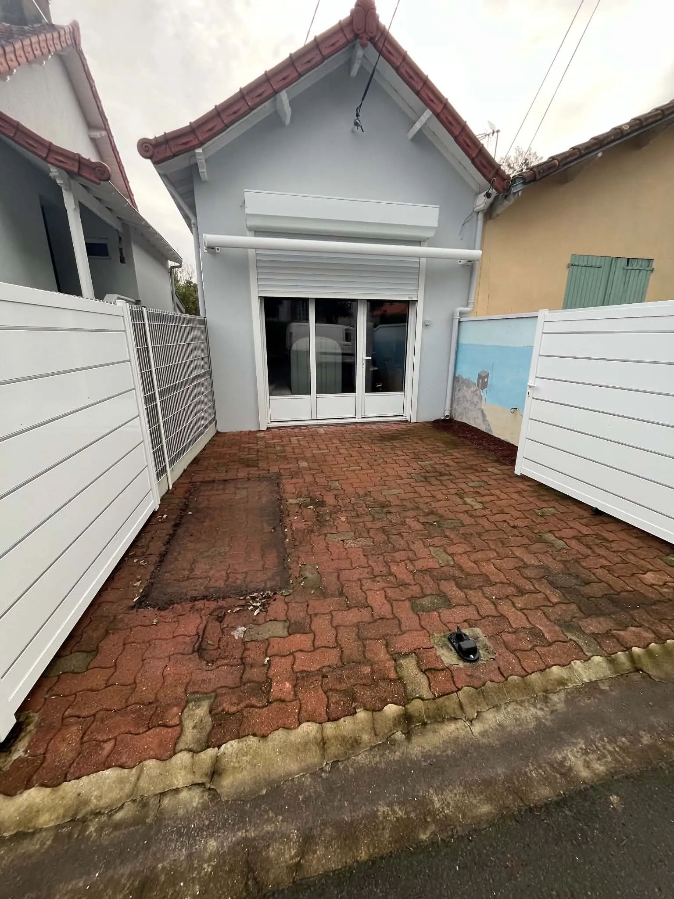
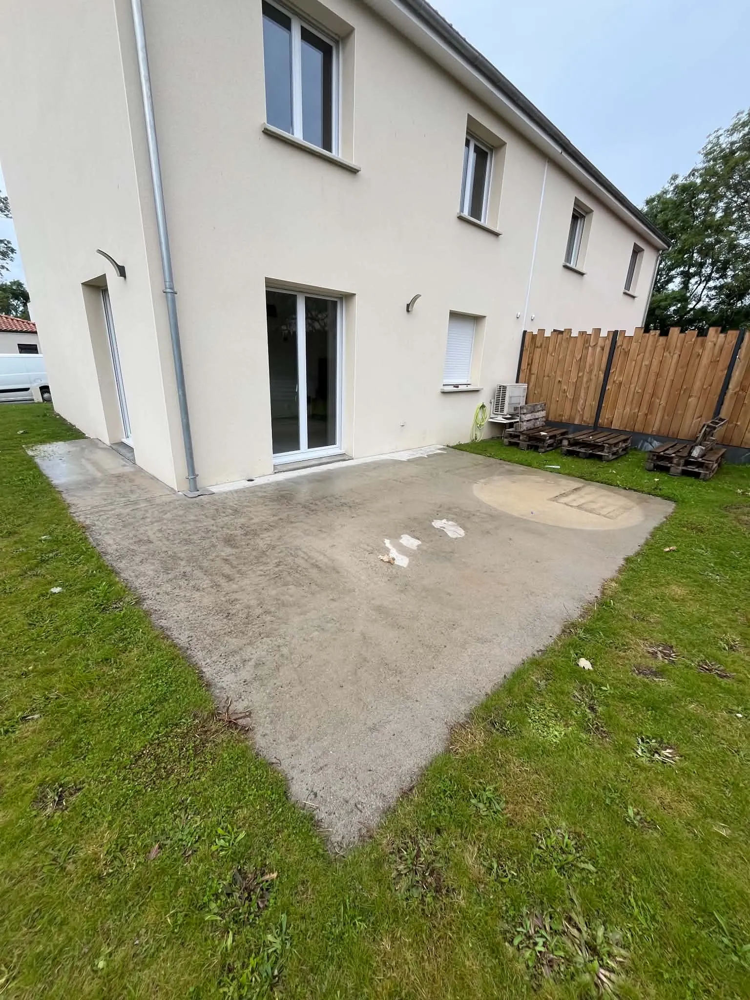

Terrasse à La Planche

 Avant
Après
Avant
Après
Terrasses, plages de piscine, allées, escaliers : découvrez quelques-uns de nos chantiers à Nantes et alentours. Faites glisser le curseur pour comparer l’avant et l’après, et cliquez sur une photo pour l’agrandir.
Avant
Après


Avant Après

Avant AprèsUne ancienne dalle béton, grise et usée, transformée en terrasse lumineuse. Le coloris Crème est rehaussé d’une bande décorative aux tons orangés qui structure l’espace, avec une bordure nette côté pelouse pour une finition soignée.
Une grande terrasse en moquette de pierre gris clair, encadrée d’une bande gris anthracite qui dessine un cadre élégant tout autour. Les finitions sont soignées jusqu’aux bords, avec une bordure nette côté pelouse. Un espace lumineux et agréable à vivre, parfait pour profiter des beaux jours.
Nous étudions votre espace et vos envies afin de vous proposer une réalisation sur mesure, pensée pour valoriser durablement votre extérieur.